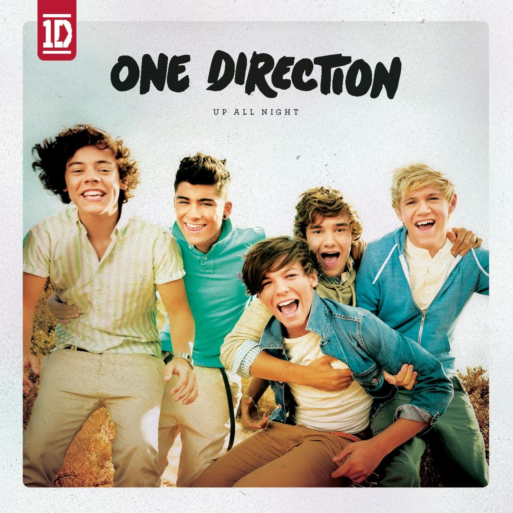

Gli One Direction sono una boy band britannica formata da Niall Horan, Liam Payne, Harry Styles e Louis Tomlinson. Hanno firmato un contratto con l'etichetta discografica Syco di Simon Cowell e, dopo essersi formati come gruppo, sono arrivati terzi nella settima edizione del talent show The X Factor nel 2010. Diventati famosi a livello mondiale, anche grazie al supporto dei social network, hanno pubblicato cinque album: Up All Night, Take Me Home, Midnight Memories, Four e Made in the A.M. (rispettivamente nel 2011, nel 2012, nel 2013, nel 2014 e nel 2015); gli album sono arrivati nelle prime dieci posizioni delle principali classifiche musicali, assieme a quindici singoli, tra i quali What Makes You Beautiful, Live While We're Young, Best Song Ever, Story of My Life, Steal My Girl e Drag Me Down.

Hanno pubblicato il loro album di debutto con Savan Kotecha e hanno pubblicato il loro singolo di debutto What Makes You Beautiful in data 19 agosto 2011. La canzone ha battuto il record di pre-ordine di vendite per la Sony Music. È entrata nella Official Singles Chart al n.1 con 153.965 copie vendute nella prima settimana. Gli One Direction hanno pubblicato il loro secondo singolo Gotta Be You il 13 novembre 2011, che ha raggiunto la posizione numero tre della classifica del Regno Unito. Nel 2014, secondo una lista stilata dal The Sunday Times, gli One Direction sarebbero la boy band più ricca della storia della musica britannica, con un patrimonio di circa 14 milioni di sterline a testa, per un totale di 70 milioni; solo nel 2013, fra tour, dischi venduti e altre attività commerciali legate al loro lavoro, il gruppo avrebbe incassato più di 45 milioni di sterline.
Della boy band faceva parte all'inizio anche Zayn Malik, che il 25 marzo 2015 ha lasciato ufficialmente il gruppo per continuare la sua carriera come cantante solista. Il 25 agosto 2015, in seguito ad alcune voci inerenti a un possibile scioglimento del gruppo, Niall Horan ha spiegato che il quartetto si sarebbe preso un periodo di pausa a partire da marzo 2016, dopo aver concluso gli impegni promozionali inerenti all'uscita del quinto album, previsto per Natale 2015 e per il quale non sarà prevista una tournée.